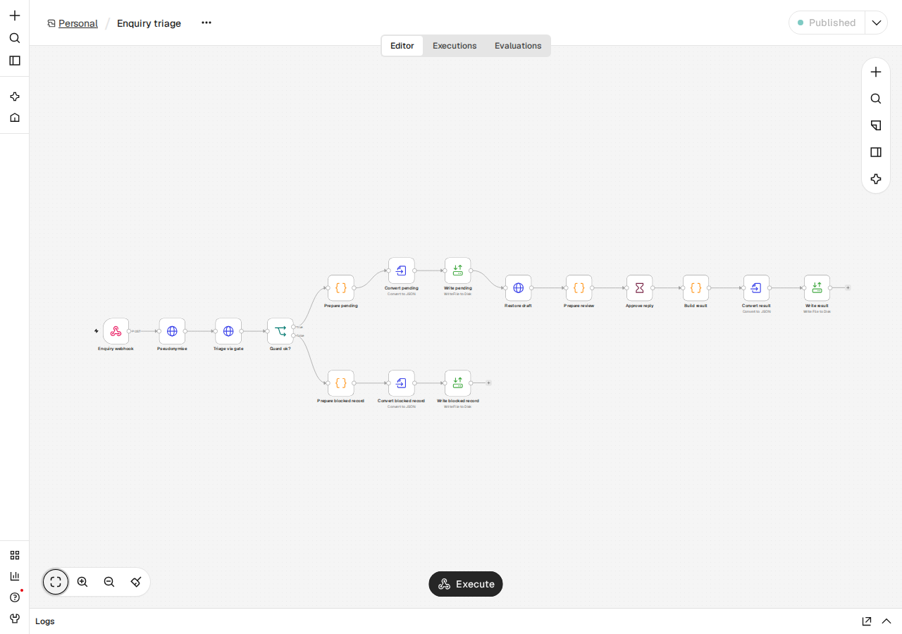

Portfolio project · Privacy engineering
Use AI on customer emails without sending personal data
A filter replaces names, addresses, IBANs and other personal data with placeholders before an email reaches a language model. The reply comes back with placeholders, and the real values go back in on your machine.
All examples on this page are synthetic. No real customer emails are shown.
Worked example
What goes in, what the AI sees, what comes out
One synthetic quote request, shown end to end. Highlighted text is personal data; the middle column is all the model receives.
The filter is built for German text; the interface is available in English and German.
Measured results
What the filter found, and what it missed
Numbers from the test runs behind this project. The datasets and the limits follow below.
Measured once on held-out test data. No value here was tuned on the test split.
Examples
Synthetic enquiries
Filter by category. Open a card to compare the original with what the AI saw. Labelled misses stay visible on purpose.
Category
Every text is synthetic. Names, addresses, phone numbers and IBANs were generated for this demo.
Try it yourself
Paste an email and hide the personal data
A simplified version of the filter runs in this browser tab. It is not the server pipeline.
Email, German phone, IBAN with checksum, postcode + city, street + number, URL, German first names and salutation cues.
This box makes no network requests. It runs only the checks listed on the left.
How it works
Five steps, one boundary
Personal data is replaced before the request crosses to the AI backend. The placeholder map never leaves the local process.
Step 4 is the only one that talks to an AI backend. The guard re-scans the pseudonymised text and blocks the call if a mapped value is still there.
The review step
A person approves every reply
In n8n, an enquiry is pseudonymised, checked by the guard and drafted. A reviewer sees the pseudonymised text, the category, the urgency and the restored draft, then approves, edits or rejects it.

Results and limits
The numbers, with their caveats
One test split, measured once. Misses are reported as they are.
Detection
A labelled span counts as caught only when every character is covered by a compatible prediction.
| Dataset | Recall | Missed spans |
|---|
GermEval 2014 is used only to compute detection rates; no sentences are shown.
Reply drafting
Every backend answered the same enquiry set.
| Backend | Valid JSON | Category | Urgency | Median reply | Calls |
|---|
What this does not catch
Known limits, shown before the numbers.
| Limit | What happens | Mitigation |
|---|
Not legal advice
This page describes a technical filter. It is not legal advice and does not replace a review of your processing under data-protection law.
Pseudonymisation keeps the link
The filter replaces personal data with placeholders. The original values still exist in the local map and can be restored, so the result stays linked to the person.
Technical details
The parts behind the claims
Architecture, detection stack, guard, backends and the tests behind the privacy claims.
Architecture
A FastAPI service receives an enquiry, runs detection, replaces values with typed placeholders, re-scans the result, calls one AI backend, and restores the placeholders in the returned draft. n8n triggers the flow; the placeholder map stays in memory and is never written to the page data.
Detection stack
Microsoft Presidio and spaCy handle names and organisations. Regular expressions with checksums handle emails, German phone numbers, IBANs, postcodes with city, street with number, URLs and VAT IDs. The browser demo adds a Faker de_DE first-name list and salutation cues.
The guard
Before any AI call, a second pass compares the pseudonymised text with the values found in the original. It checks normalised originals and digit-only forms for phone numbers and IBANs. On a leak the call is blocked and the verdict names the leaked types, never the values.
AI backends
Four backends behind one interface: Claude and Codex through their CLIs, a BYOK chat-completions endpoint, and a local Ollama model. The results table records every call of the reply-writing test.
No-network test for the demo
The try-it box was checked with browser network logging: typing text and pressing the button made no requests. The claim covers that box only; the rest of this page loads its two JSON files once.
Test data and reporting
All enquiries on this page are synthetic, built from hand-written templates and Faker de_DE values. GermEval 2014 is downloaded by a script, git-ignored, never shown and never sent to a model; only detection rates are published. Labelled misses are reported as they are.
Reproducibility
The page data carries the run's version, commit, timestamp and SHA-256. A small assertion script checks that every number in the stat cards equals the value in results.json.
Data and credits
What this page stands on
Open tools and one research dataset, with the licence and the limit of each.